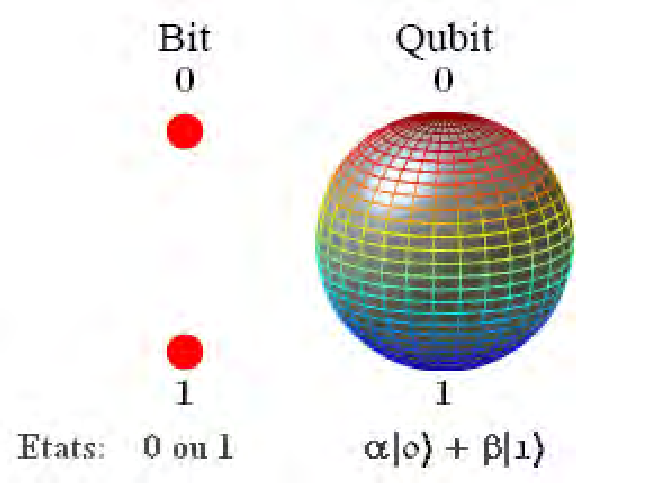

Superposition is when something exist in two states. In quantum computing it is used to describe the position of a qubit. In traditional coding, bits are used to store data. The bits are either a 0 or a 1. In quantum computing, quibits are not confined to one value, rather they can be a 1 and a 0 at the same time.
This is an ordianry bit that is representing a 0.
This is an ordinary bit that is representing a 1.
This is a qubit which is in a superposition of two states, 0 and 1.
However, mainting the superpositon of quibits can be very difficult. The surroundings of the quantum system must be very precise as even the slightest change can disrupt the system. For this reason quantum computers are kept at an extremely low temperature and the air is vaccumed out of the room it is placed in.
Superposition Image: Research Gate - Achmad Benny Mutiara and Rina Refianti - CC BY 4.0